TMD applied to full FEA model with transfer function approach
Updated 02-17-2025
Tags: Structural Dynamics, TMD, FRF, Transfer Function, VibrationTuned mass dampers are a common engineering solution to vibration issues that see application in mechanical, civil, and aerospace engineering.
On precision motion systems (integrated into a larger machine), a common issue is vibration of lightly damped structures causing blurry pictures from a camera/optics or a tool moving around too much outside its allowed area. Example systems are defect inspection systems, lithography machines, CMMs, wire bonders, die bonders, lathes, milling machines, grinding machines, etc...
Equations from Andrew Wilson's 2015 web-pages
A few terse articles from Andrew Wilson describe a clever computationally efficient method of including a TMD on a larger system model. He also gives the transfer function equation for a TMD.
While the articles focus on a state space description, a simple transfer function based method can be used for the simple case of co-located TMD and point of interest.
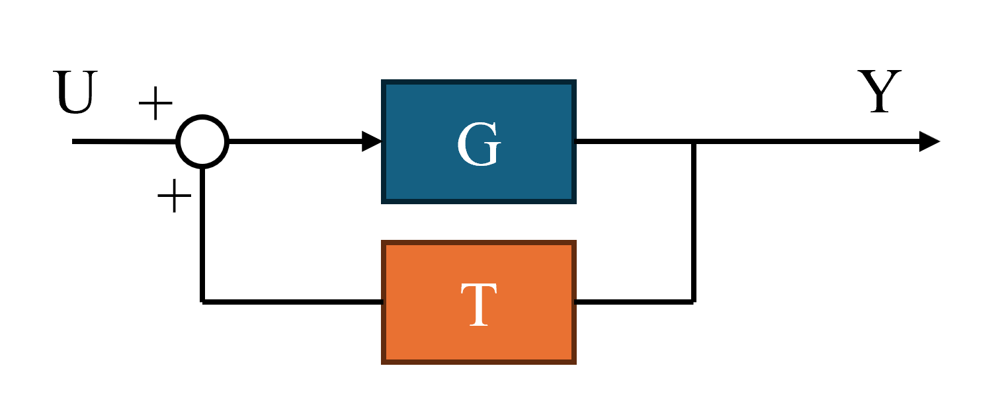 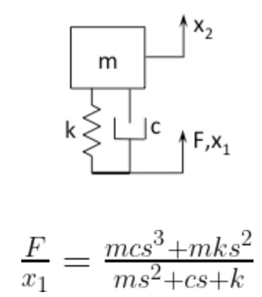The block diagram equations for the transfer function case are solved below. The equations end up being very similar to a typical feedback control system (but with a sign reversed).
Let G = plant, T = TMD Transfer Function
Simple application to a finite element model
I used SolidWorks' FEA package for harmonic analysis of a cantilevered structure to get the plant data (in form of mag/phase bode plot). The 20x4x1.5" structure is made from titanium 6AL-4V and weighs 1.78kg. A fixed boundary condition is applied at one end, and a unit 1N load is applied at the other (load only for use in FRF).
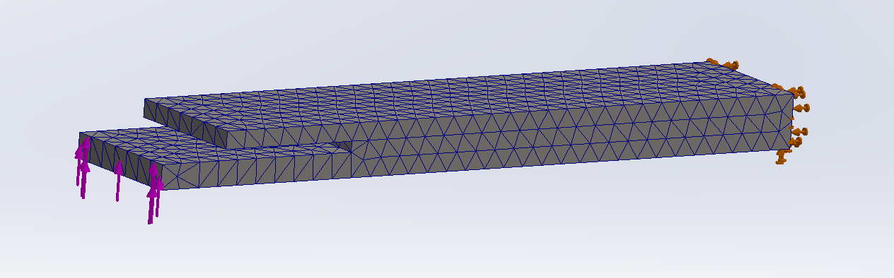 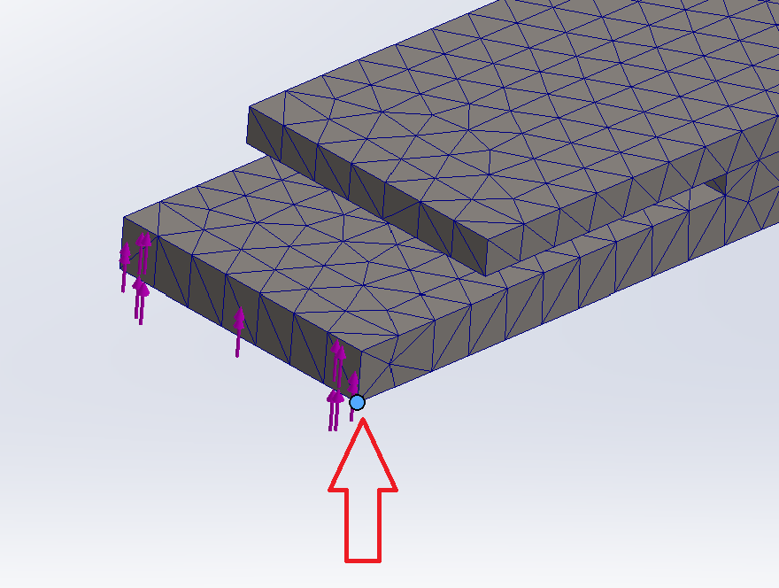 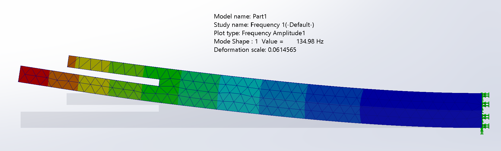 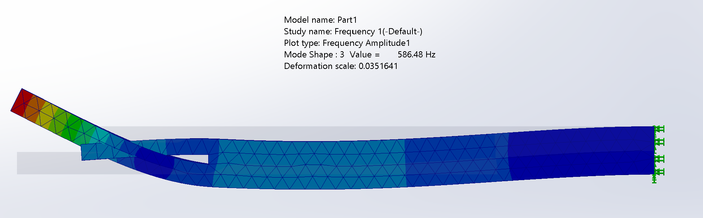 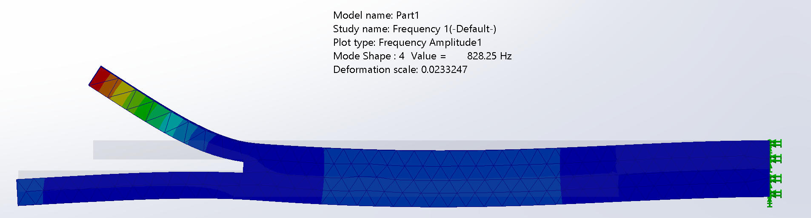 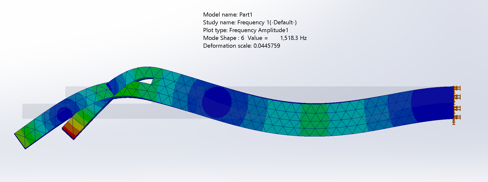The first step in any strutural dynamics problem is to compute the eigen-modes. Next, the frequency response function(s) (FRF) can be computed between force at a given node(s) and displacement at a given node(s). I picked a node at the edge of the structure. From this a transfer function (example units meters/Newton) can be fit for example using MATLAB "tfest" function. A model with 10 poles and 8 zeros captures the majority of the dynamics up to ~7kHz.
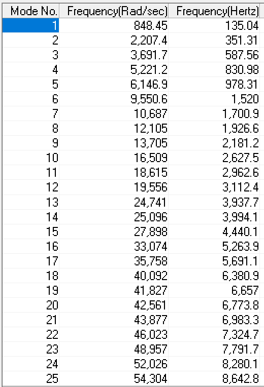 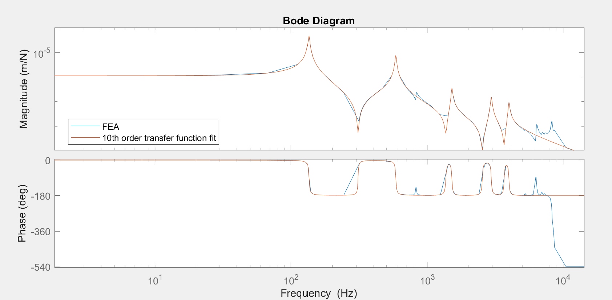 G=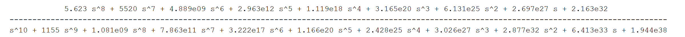Using only the FEA code, any change to the TMD parameters (stiffness, mass, damping) would need a full re-run of the model, which could be 1-8+ hours of calcultion time depending on the model complexity. The beauty of the state space or transfer function method is that it allows quick computation and iteration on the TMD parameters. Computation time is reduced from potentially hours to seconds.
A tuned mass damper with mass = 200g, c = 50Ns/m, k = 110e3 N/m is selected to be installed which reduces the FRF amplitude due to the first peak by 91.8% and the second peak by 60.3%.
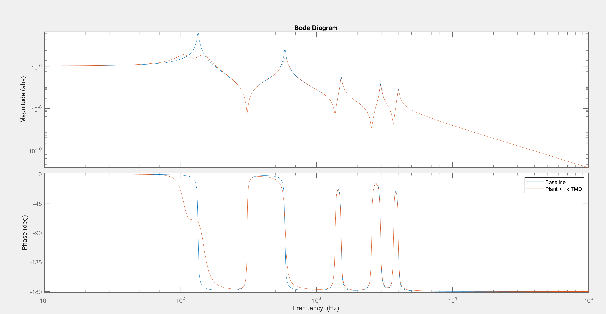Let us now consider a case where the second mode must also be damped. A second tuned mass damper with mass = 50g, c = 20Ns/m, k = 65e3 N/m is selected to be installed. Block diagram math rules say parallel functions add which makes including another TMD simple. There is good improvement in FRF.
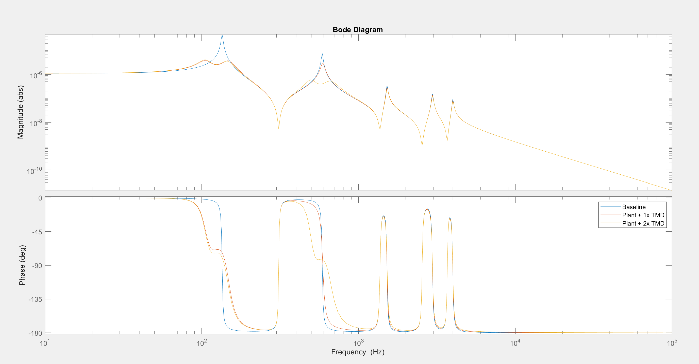Let us now consider a case where the higher order modes need some damping. A Lanchester damper (TMD with a very soft spring, high damping) works well for broadband damping and does not need special tuning to a specific frequency. The parameters chosen are m=50g, c=5000Ns/m, k=1e3N/m. The higher frequency peaks are slightly damped. It slightly changes the tuning of the two TMDs, so perhaps an optimization code could select optimal parameters for all the dampers simultaneously.
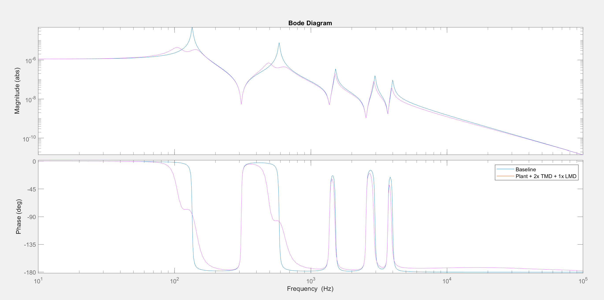Future work
- FEA scripts and MATLAB codes for state-space based approach
- Tranfer function based approach when TMD is not located at POI, and when plant input force is not located at POI or TMD
- Scripts for determining parameter sensitivity and parameter optimization of TMD(s)
- Include controller transfer function to estimate impact of TMD on servo system bandwidth
Further Reading
- https://dcc.ligo.org/public/0119/T1500271/007/T1500271-v7.pdf
- https://pure.tue.nl/ws/portalfiles/portal/20530101/20160420_Verbaan.pdf
- https://detaileddynamic.com/tuned-mass-damper/
- https://detaileddynamic.com/tuned-mass-damper-applied-to-6-dof-model/
- https://www.spiedigitallibrary.org/conference-proceedings-of-spie/4697/1/Design-of-multi-degree-of-freedom-tuned-mass-dampers/10.1117/12.472646.short
- https://mechanicsandmachines.com/?p=393
- https://doi.org/10.1115/IMECE2023-114234
MATLAB Code
% tmd transfer function based code
% FEA mag/phase
% david john haruch 15 feb 2025
close all
s = tf('s');
p = bodeoptions('cstprefs');
p.FreqUnits = 'Hz';
p.MagUnits = 'abs';
p.MagScale = 'log';
%import FRF (units mm/N)
mag_csv = csvread("mag.csv");
phase_csv = csvread("phase.csv");
freq_csv = mag_csv(:,2);
mag = mag_csv(:,3)/1e3; % units N/m
phase = phase_csv(:,3);
plant_frd = [mag.* exp(1j*deg2rad(phase))];
Gfea = frd(plant_frd,freq_csv.*6.28);
G = tfest(Gfea,10,8);
% plot plant and estimate
figure(1)
bodeplot(Gfea,p)
hold on
bodeplot(G,p)
legend('FEA','10th order model fit')
% TMD parameters
mtmd = 0.2; %kg
ctmd = 50; %Ns/m
ktmd = 110e3; %N/m
mtmd2 = .05; %kg
ctmd2 = 50; %Ns/m
ktmd2 = 600e3; %N/m
mtmd3 = .05; %kg
ctmd3 = 5000; %Ns/m
ktmd3 = 1e3; %N/m
% transfer functions
T = (mtmd*ctmd*s*s*s + mtmd*ktmd*s*s)/(mtmd*s*s + ctmd*s + ktmd);
T2 = (mtmd2*ctmd2*s*s*s + mtmd2*ktmd2*s*s)/(mtmd2*s*s + ctmd2*s + ktmd2);
T3 = (mtmd3*ctmd3*s*s*s + mtmd3*ktmd3*s*s)/(mtmd3*s*s + ctmd3*s + ktmd3);
GTMD = (G)/(1+G*T);
GTMD2 = (G)/(1+G*(T+T2));
GTMD3 = (G)/(1+G*(T+T2+T3));
% plot results
figure(2)
bodeplot(G,p)
hold on
bodeplot(GTMD,p)
legend('Baseline','Plant + 1x TMD')
figure(3)
bodeplot(T,p)
hold on
bodeplot(T2,p)
bodeplot(T+T2,p)
bodeplot(T+T2+T3,p)
figure(4)
bodeplot(G,p)
hold on
bodeplot(GTMD,p)
bodeplot(GTMD2,p)
legend('Baseline','Plant + 1x TMD','Plant + 2x TMD')
figure(5)
bodeplot(G,p)
hold on
bodeplot(GTMD3,p)
legend('Baseline','Plant + 2x TMD + 1x LMD')